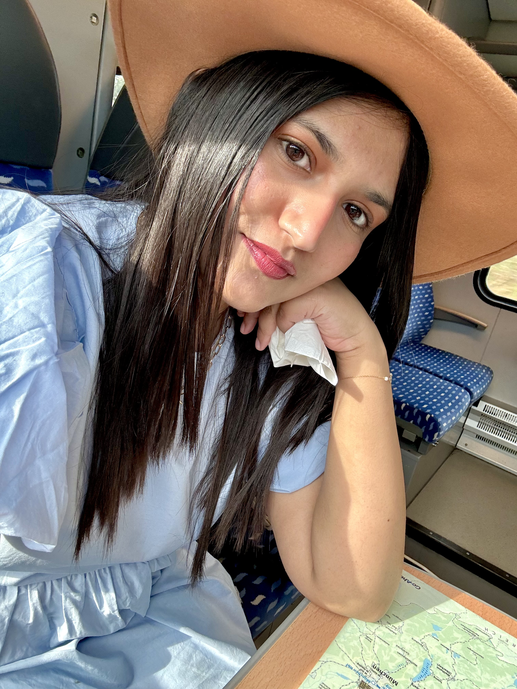
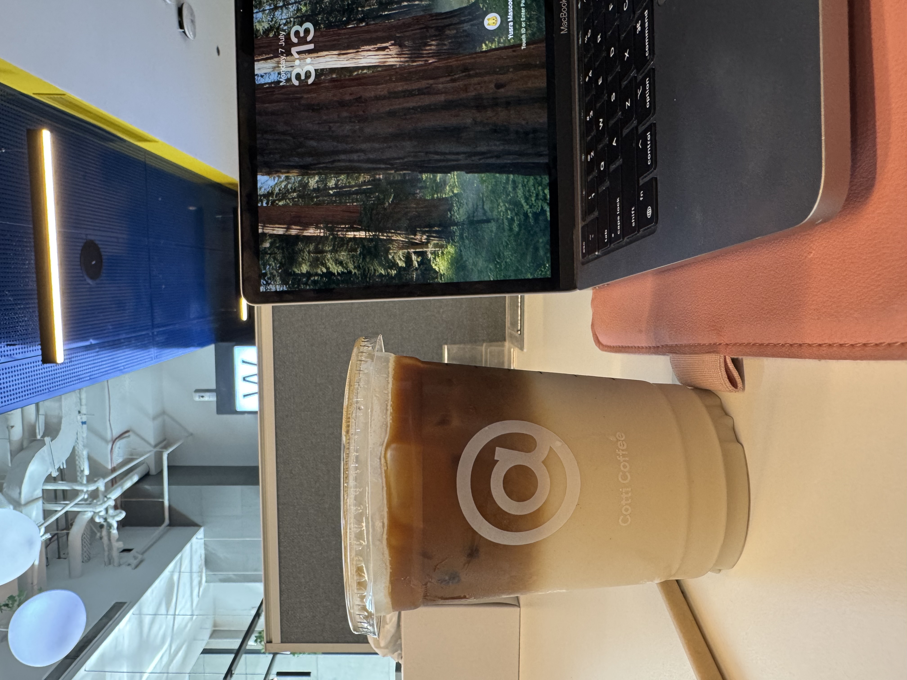

📍 Currently based in
Wannabe Photographer/ Painter /Artist /Writer /Chef /Traveller
SOFTWARE ENGINEER
Code, curiosity
& a little color.
Hey, I’m Yusra — a software engineer who likes building useful things, asking better questions, and making room for creativity along the way.
A work in progress, just like me

BUILD
THINGS
WITH HEART ✳
THINGS
WITH HEART ✳
Thoughtful software✳Visual stories✳New places✳Good questions✳Thoughtful software
A little introduction
Engineer brain.
Creative heart.
.

I’m Yusra Masood, a software engineer with almost 5 years of experience in full-stack web development and mobile development. I graduated with a BE in Software Engineering from the National University of Sciences and Technology (NUST), Pakistan, in 2020.
I enjoy working on ideas that can make a difference, learning from the people around me, and growing both professionally and personally. I like teams where curiosity is welcome and people can do their best work together.
Outside of code, you’ll find me taking photos, making short videos, experimenting with animation, painting, writing, cycling, baking, or exploring somewhere new in search of good food.
Open to opportunities in
GCC / EU / Remote
Places I’d be excited to call the next chapter.
The path so far
Work in progress
(in the best way).
Different roles, different challenges — all adding something to the toolkit.
JAN 2024 — PRESENT
Senior Software Engineer
Led 0→1 development of a fintech trading platform, building the backend, APIs, and trading engine from scratch, with brokerage, payment (Apple IAP, Stripe), and KYC (Onfido) integrations across web and mobile. Built automated portfolio rebalancing algorithms and managed the platform post-launch, growing AUM from $0 to $300K+.
Toolkit: React.js, Next.js React native /TypeScript, Node.js/Express, Stripe, Apple IAP,
JAN 2023 — DEC 2023
Software Engineer
Built an identity and access management platform with OAuth and custom APIs.
Delivered data-driven features, ensuring secure and scalable access management.
Toolkit: OpenID, OAuth, JavaScript
.
JUN 2021 — DEC 2022
Technical Content Engineer
Created technical learning content for text-based courses with embedded coding environments.
Toolkit: JavaScript, Docker.
NOV 2020 — JUN 2021
Associate Software Engineer
Worked as a full-stack web developer for large-scale client projects.
Toolkit: JavaScript, React, HTML/CSS, Python, Django REST Framework, Material UI.
FEB 2019 — MAY 2019
Frontend Developer · Research Intern
Developed a web portal to monitor sensor values and display live graphs.
Toolkit: JavaScript, jQuery, HTML/CSS.
My toolkit
Technical Skills
Trying to fit-in everything I've worked on
Full Stack Development
JavaScript, Next.js, Node.js / Express, React.js Python, Django REST Framework, REST APIs, Material UI.
Mobile Development
React Native, TypeScript, Expo, Redux, Apple IAP (in-app purchases and subscriptions)
Everything else
Stripe, OAuth, Socket.IO, KYC, Git, System design, UML diagrams, software testing, formal verification, technical writing and documentation.
Industries I've worked in
FinTech, EdTech, HealthTech
Selected work · A few problems tackled
Ideas, meet execution.
A mix of experiments, engineering projects, and practical tools. Each one started with a question worth exploring.
PROJECT 01◉
Virtual Try-on with Augmented Reality
↗An Android AR plugin for trying on products virtually — from makeup and lenses to glasses, hats, and tattoos.
PROJECT 02✳
Automated Indoor Agriculture
↗A model of an automated indoor farming system, formally simulated and verified, paired with a web portal to monitor sensor values.
PROJECT 03⌕
Movie Identification Technology
↗An Android app that identifies a movie from a subtitle or even a fragment of one, using hash tables to improve search efficiency.
PROJECT 04↗
Minerva: Connecting Students
↗A student community platform where learners can ask questions and get help through text or video replies.
PROJECT 05⌁
Hand Gesture Recognition
↗A desktop application that recognizes hand gestures and translates selected signs or finger counts into meaningful messages.
PROJECT 06＋
Daily Dairy
↗A user-friendly front end for simplifying the process of ordering dairy products online.
Learning foundations
Where it started.
Bachelor of Engineering — Software Engineering
National University of Sciences and Technology (NUST) · Islamabad, Pakistan
Graduated with 86.5% in major
CLASS OF 2020
Intermediate — Pre-Engineering
Army Burn Hall College · Abbottabad, Pakistan · 82%
CLASS OF 2015
Right now
Current
obsessions.
A live look inside my brain. Subject to change without notice.
📚
Currently Reading
Who Moved My Cheese?
🔬
Currently Researching
Neuroplasticity
🍫
Current Favorite Snack
Acai Greek Yoghurt 😋 😋 😋
🎬
Currently Watching
The Watcher
Outside the tabs
More than my job title.
The hobbies that keep me curious, observant, and happily distracted from my screen.
Collecting little moments 📸 and trying hobbies I clearly can't keep up with
Sometimes I "try" to Paint but don't ask me to show you the results
Exploring cities, FOOD, malls, recipes I (probably) can't recreate and did I mention FOOD?
Good things start with a hello
Have an idea?
Let’s talk.
Always happy to connect about thoughtful products, interesting engineering problems, creative collaborations, or the next adventure.